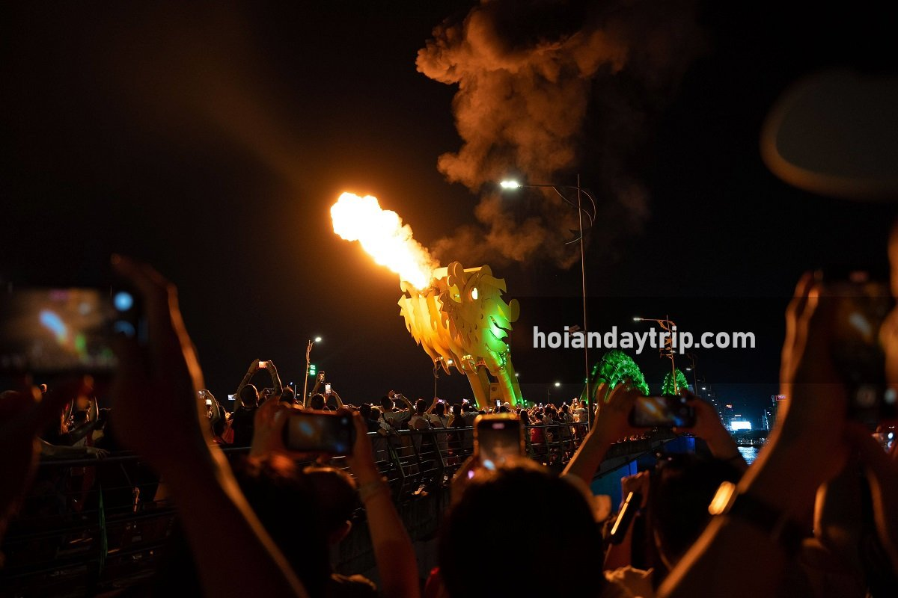
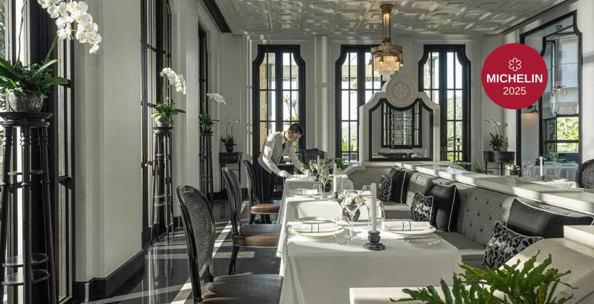
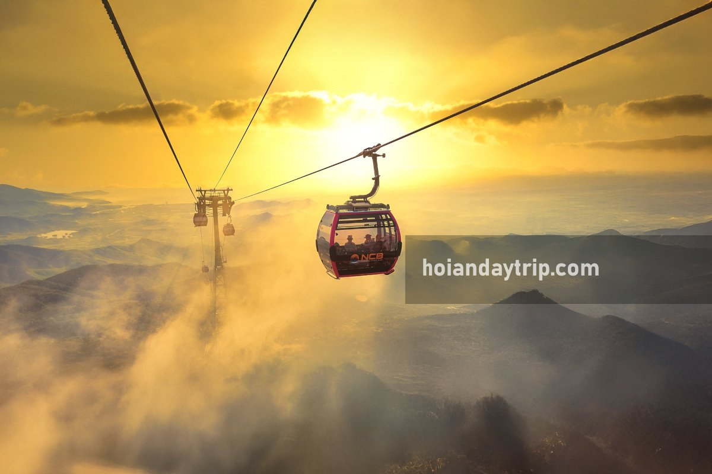

Da Nang · Vietnam · Weekend Programme
Weekend in Da Nang
La Maison 1888 & Beyond
Friday evening → Sunday. Anchor: Saturday dinner at Central Vietnam's only Michelin-starred restaurant.
-
Afternoon
Check in — My Khe Beach strip or Han River
City-centre hotels on the My Khe beach strip or Han River put you 15 min from the Dragon Bridge on foot. Staying at the InterContinental Danang eliminates the Saturday transfer but adds cost — see the dinner page for resort tiers.
Resort option: eliminates Sat transfer -
18:00
Dinner: ease in with local street food
Mì Quảng 1A (Michelin Guide 2025 — turmeric noodles, pork, shrimp, peanuts) [12] or graze the Helio Night Market (2/9 St, Hai Chau, 17:00–22:30, stalls from 10–35k VND). [15]
-
20:30
Position for Dragon Bridge

Dragon Bridge fire & water show — Fri/Sat/Sun 21:00–21:15 (15 min). [4] Free. Arrive 30 min early; station yourself on Tran Hung Dao promenade or book the Sky36 rooftop [16] (36th floor Novotel, 360° view).
⚠ Saturday conflict: Saturday dinner at La Maison 1888 runs until ~22:00+ — you will miss Saturday's show. Friday is the Dragon Bridge slot.Free Skip Sat — book La Maison that night instead -
22:00+
Nightcap: Sky36 or Brilliant Top Bar
Sky36 (smart-casual, no flip-flops) [16] or Brilliant Top Bar (17F, Sat = live Latin & Jazz). [17]
-
06:30
Optional: douc langur sunrise walk
Sơn Trà Peninsula holds the world's largest population of red-shanked douc langurs (>1,300). [18] Feb–Aug dry season offers best sighting odds. Book a naturalist-guided morning walk — the routes reopened Sep 2025. [19] Gates: 07:30–18:30. Automatic scooters banned beyond checkpoint — go with a tour vehicle.
Optional — skip if you prefer a slow start -
09:00
Linh Ứng Pagoda + Lady Buddha
 Vietnam's tallest Lady Buddha (67 m, 17 interior floors). [23] Free, open 06:00–21:00, ~10 km NE of city on Sơn Trà. Panoramic views of Da Nang bay. Spend 45–90 min. The pagoda is a natural stop on the way to the InterContinental later.Free
Vietnam's tallest Lady Buddha (67 m, 17 interior floors). [23] Free, open 06:00–21:00, ~10 km NE of city on Sơn Trà. Panoramic views of Da Nang bay. Spend 45–90 min. The pagoda is a natural stop on the way to the InterContinental later.Free -
11:00
Beach / leisure on Sơn Trà or My Khe
If staying at the InterContinental, access Bai Bac cove via the Nam Tram cable car. Otherwise use My Khe Beach (8–9 km, free, 15 min from centre). Save energy — tonight is a long dinner.
-
13:00
Lunch: light — keep appetite for dinner
Bún Chả Cá 109 (Bib Gourmand, light dill-and-tomato fishcake soup) [13] or a simple café on the Han River strip. Avoid anything heavy.
-
15:00
Prepare — change, rest, pre-dinner Champagne
Smart resort wear required (no shorts, no flip-flops). If staying in-city, organise your Grab ride now — surge pricing is possible Saturday evening. You need to leave the city by 17:45 to clear the peninsula road by 18:10.
Grab booked in advance Dress code enforced -
17:45
Depart for InterContinental Danang
Grab from central Da Nang to InterContinental Danang Sun Peninsula Resort: ~25 min, ~150–200k VND. [25] On arrival, the Nam Tram cable car (130 m, 4 levels through jungle, Bill Bensley design) carries you up through the resort to La Maison. [10] Factor 20 min.
~150–200k VND Grab

★ Michelin 1 Star · Central Vietnam's Only
La Maison 1888
- Service18:30 – 21:00 daily
- ChefChristian Le Squer (3★ Le Cinq, Paris) + Florian Stein on-site
- GourmandVND 5,999k++ — caviar, truffle, turbot, wagyu [2]
- EpicureanVND 7,599k++ — adds lobster & onion gratin course
- Wine pairGourmand 5,999k · Epicurean 7,599k — incl. 2003 Pauillac + 1999 Maury
- DepositVND 1,000,000 / person — forfeited if cancelled after 11:00 day-of [1]
- Book+84 236 393 8888 · 1 week ahead on weekends [20]
-
18:30
★ Dinner at La Maison 1888
Tasting menu service begins. Full Gourmand (6 courses) or Epicurean (8 courses). Pacing: plan for 2.5–3 hours. The room — floor-to-ceiling windows over Bai Bac cove, Bill Bensley colonial mansion, black-and-white yin-yang palette — is half the experience.
-
21:30+
Return transfer — plan ahead
Grab availability on Sơn Trà is limited late at night. Pre-book a private return transfer or confirm your driver waits. Budget VND 400–500k each way. [25] KKday also offers roundtrip packages from Da Nang city centre.
~400–500k VND return transfer Pre-arrange before dinner

- 08:30Depart Da Nang — Grab or car (~40–50 min) [22]
- 09:30–12:00Stop at Marble Mountains en route (12 km from Da Nang, 2–3 hr, 40k VND) [11]
- 11:30Arrive Hội An, buy entrance ticket (120k VND, 5 sights) [6]
- 12:00–14:00Lunch: Bánh Xèo Bà Dưỡng (Michelin — crispy turmeric pancakes) [14]
- 14:00–17:30Ancient town, assembly halls, tailors, Thu Bon riverfront
- 17:30+Lanterns lit at dusk — the town is at its best now
Skip if: Full Moon Festival (14th lunar day) is the draw — check date before travel [21]
Option B · 35 km / ~1 hr
Bà Nà Hills
Cable car record · Golden Bridge · French village · 1,487 m altitude

- 07:30Early departure — cable car starts filling from 08:00
- 08:30–09:00Arrive; buy ticket (1,000,000 VND, valid 3 days from 2026) [24]
- 09:00–10:00Guinness-record cable car (5,801 m single-track) up to 1,487 m
- 10:00–12:00Golden Bridge, French Village, Linh Chua Linh Tu Temple [7]
- 12:00–14:00Lunch on-site (restaurants inside the complex)
- 14:00–16:30Fantasy Park, gardens, or simply enjoy the cool mountain air
- 17:00Last cable car down; return to Da Nang ~18:00
Note: this is a theme park, not a hike — manage expectations accordingly
Key eats beyond La Maison 1888
Logistics at a glance
Getting around
- Grab — city centre ↔ Sun Peninsula: ~25 min, ~150–200k VND
- Return from La Maison: VND 400–500k; pre-arrange late-night driver
- Day-trip: Grab or hired car for Hội An / Bà Nà Hills
- ⚠ Scooter rental: verify IDP validity; fines increased from Jan 2025
Booking checklist
- La Maison 1888: +84 236 393 8888 — 1 week ahead on weekends
- VND 1,000,000 deposit / person; cancel by 11:00 day-of to avoid forfeiture
- DIFF riverboat / rooftop: book 2 weeks ahead on show nights
- Sky36 / Brilliant Top Bar: walk-in usually fine (arrive early)
Key costs (VND)
- La Maison dinner × 2: ~27–28M (Gourmand + wine + charges)
- Dragon Bridge: free
- Linh Ứng Pagoda: free
- Hội An town ticket: 120k / person
- Marble Mountains: 40k + 15k lift
- Bà Nà Hills ticket: 1,000k / person (3-day validity)
- ~25,000 VND ≈ US$1